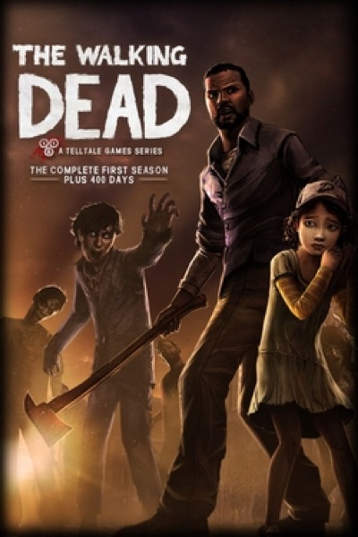

Adventure · 2012
The Walking Dead
Episodic choices that made saving one person hurt for weeks.

Cover: Wikipedia: The Walking Dead (video game)
Facts
- Released
- 2012-04-24
- Genre
- Adventure
- Category
- Adventure
- Platforms
- Mobile, PC, PlayStation, Xbox
- Developers
- Telltale Games
- Publishers
- Telltale Games
PC requirements
- Minimum
- [object Object]
- Recommended
- [object Object]